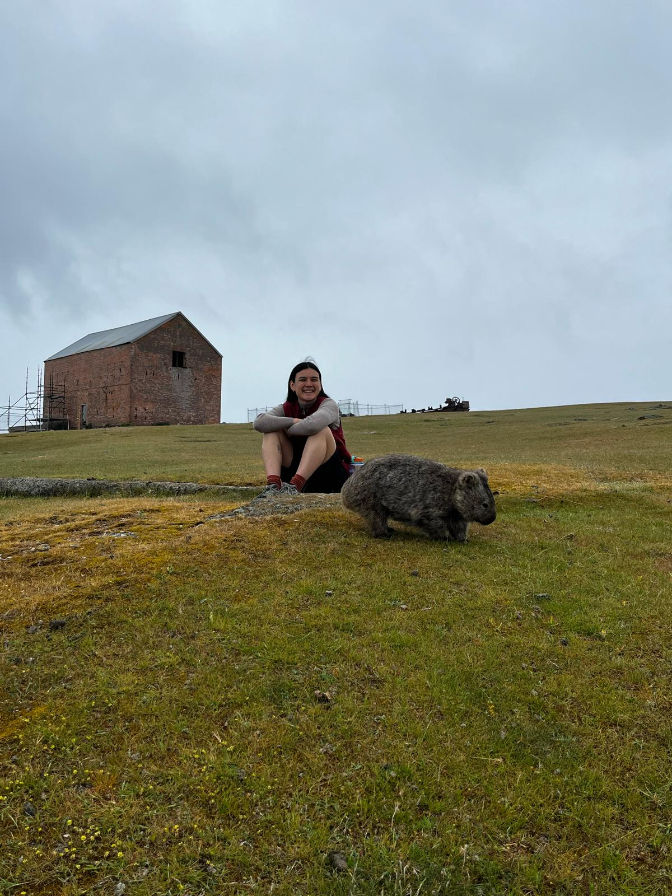

Le-Anne Bannan
Geographer, researcher and GIS practitioner.
I work where geospatial science meets environmental issues and community aspirations. My research looks at how people adapt and respond to environmental change, and how GIS can be used as a tool to both record and navigate these changes in a way that is socially and environmentally just.
I hold a Master of Geospatial Science from RMIT University and a Bachelor of Environmental Geography from the University of Melbourne. I have worked on research projects lead by the University of Wollongong and University of Melbourne which use GIS to document and amplify community knowledge and aspirations, allocate resources and demonstrate relationships at different scales.